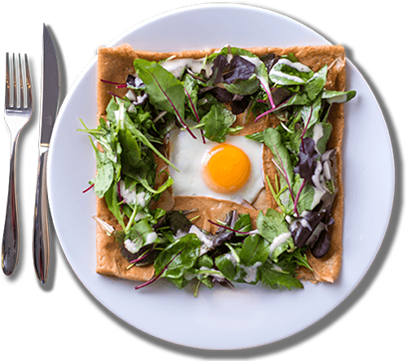

老舗ならではの技術と味をお届けします。
1985年の創業以来コーヒー豆のブレンドにこだわりました。特長のあるブレンドに合わせる為に、焙煎機はドイツPROBAT社の焙煎機を導入。深煎りで適度な苦味とコクを出し、後味がすっきりしたマイルドブレンドを創り上げました。
shop info
online shopネット販売
遠方のお客様の為に、オンラインストアから直接コーヒー豆等の販売をさせて頂きます。
◤ online shop
comany store直営店舗
インストラクターやバリスタの資格を取得した当店自慢のスタッフ達が、当社のコーヒーをより美味しく召し上がって頂く為のお手伝いを致します。
◤ comany store
ブレンドコーヒー
マイルドブレンド
渋み∅∅∅∅
酸味∅
香り∅∅∅∅
深みとコクのある当社人気NO.1のブレンド。ブラジル産の豆をベースに4か国の豆をブレンドして深煎り焙煎で仕上げました。程よい苦味のある後味がマイルドな特徴のあるコーヒーです。
◤ onlineshopロイズブレンド
渋み∅
酸味∅∅∅
香り∅∅∅
あっさりとした酸味が心地良いアメリカンタイプ。ブラジル産の豆をベースに3か国の豆をブレンドして中煎り焙煎であっさりと仕上げました。軽いコーヒーが好きな方にお勧めです。
◤ onlineshopエチオピアモカブレンド
渋み∅∅
酸味∅∅∅
香り∅∅∅∅
さわやかな酸味とモカ特有の上品な香りがあるコーヒー。エチオピア産の豆をベースに4か国の豆をブレンドして中煎りで仕上げました。コーヒーの香りを楽しみたい方にお勧めです。
◤ onlineshopブルーマウンテン
NO.1ブレンド
渋み∅∅∅
酸味∅∅∅
香り∅∅∅∅
ブルーマウンテンの中でも最高級のブルーマウンテンNO.1をベースにしたブレンド。ジャマイカ産の豆をベースに4か国の豆をブレンドして中煎り焙煎で仕上げました。自分へのご褒美として召し上がって頂きたいコーヒーです。
◤ onlineshopストレートコーヒー
ブルーマウンテンNO.1
渋み∅∅∅∅
酸味∅∅∅∅
香り∅∅∅∅∅
生産量が少ないブルーマウンテンの中でも一番グレードの高い豆。絶妙なバランスを備えた、日本で一番人気のあるコーヒーです。当社ではバランスを活かす為に中煎り焙煎で仕上げています。
◤ onlineshopキリマンジャロAA
渋み∅∅
酸味∅∅∅
香り∅∅∅
程よい酸味が特徴のキリマンジャロの中で 一番グレードの高い豆。当社では中深煎り焙煎をして酸味を抑えてバランスをとりました。当社の焙煎士が一番好きな豆で、こだわりの焙煎をしています。
◤ onlineshopエチオピアモカ
渋み∅∅
酸味∅∅∅∅
香り∅∅∅∅
特徴のある強い香りと、コクがあるコーヒーです。エチオピア産モカの最高級品を中煎りで仕上げました。砂糖とミルクを多めに入れると紅茶のように感じられる不思議な豆です。
◤ onlineshopマンデリンG1
渋み∅∅∅
酸味∅∅∅
香り∅∅∅
芳醇な香りとコクのある、やわらかな苦味が特長のコーヒーです。インドネシア産の豆を中深煎りで仕上げました。全体的なバランスがとれているので、ストレートコーヒーの好みを知る為のベースになるかも・・・。
◤ onlineshopグァテマラSHB
渋み∅∅
酸味∅∅∅∅
香り∅∅∅∅
上質な風味と甘い香りのある柔らかい口あたりのコーヒーです。グァテマラ産の豆を中煎りで仕上げました。すっきりとした味わいをお楽しみ頂けます。
◤ onlineshop